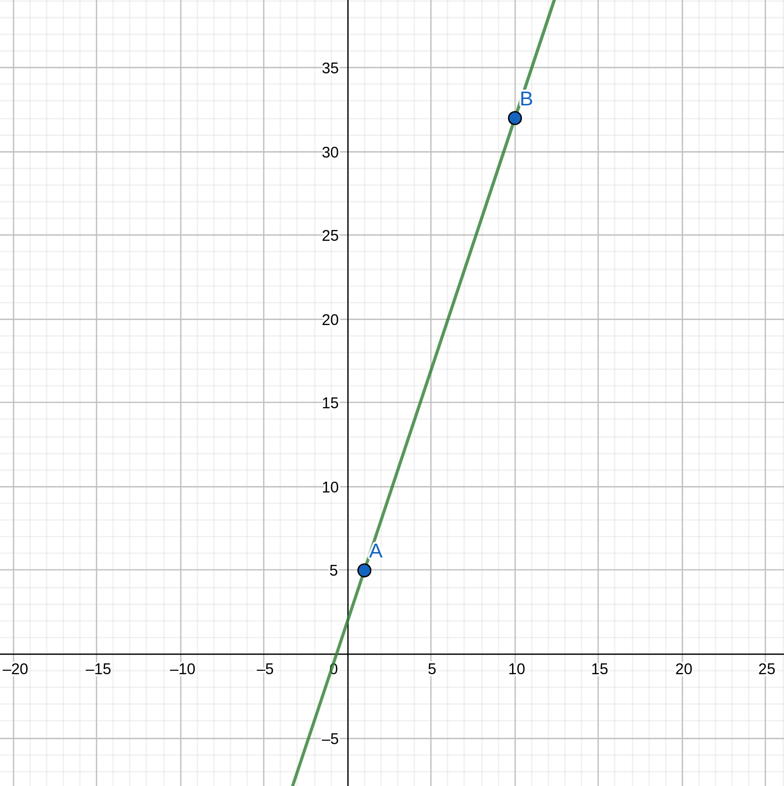

RLN (Rate-Limiting Nullifier) is a zk-gadget/protocol that enables spam prevention mechanism for anonymous environments.
RLN is part of (PSE) Privacy & Scaling Explorations, a multidisciplinary team supported by the Ethereum Foundation. PSE explores new use cases for zero-knowledge proofs and other cryptographic primitives.
Overview
This section is a starting point for understanding the concepts of RLN.
Here we'll discuss:
- Basic explanation of the RLN protocol;
- RLN protocol under the hood;
- RLN uses.
What is Rate-Limiting Nullifier?
RLN is a zero-knowledge gadget that enables spam prevention in anonymous environments.
The anonymity property opens up the possibility for spam, which could seriously degrade the user experience and the overall functioning of the application. For example, imagine a chat application where users are anonymous. Now, everyone can write an unlimited number of spam messages, but we don't have the ability to kick this member because the spammer is anonymous.
RLN helps us identify and "kick" the spammer.
Moreover, RLN can be useful not only to prevent spam attacks but, in general, to limit users (in anonymous environments) in the number of actions (f.e. to vote or to make a bid).
How it works
The RLN construct's functionality consists of three parts These parts should be integrated by the upstream applications, that require anonymity and spam protection. The applications can be centralized or decentralized. For decentralized applications, each user maintains separate storage and compute resources for the application.
The three parts are:
- registration;
- interaction;
- withdrawal (or slashing);
Registration
Before registering to the application, the user needs to generate a secret key and derive an identity commitment from the secret key using the Poseidon hash function:
\[identityCommitment = Poseidon(secretKey)\]
The user registers to the application by providing a form of stake and their identity commitment, which is derived from the secret key. The application maintains a Merkle tree data structure (in the latest iteration of RLN, we use an Incremental Merkle Tree algorithm for gas efficiency, but the Merkle tree does not have to be on-chain), which stores the identity commitments of the registered users. Based on the stake amount apps can derive what's the messageLimit (\(userMessageLimit\)) for a user. Then the rateCommitment:
\[rateCommitment = Poseidon(identitytCommitment, userMessageLimit)\]
will be stored in the membership Merkle tree.
Interaction
For each interaction that the user wants to make with the application, the user must generate a zero-knowledge proof ensuring that their identity commitment (or specifically rate commitment) is the part of the membership Merkle tree.
There are a number of use-cases for RLN, such as voting applications (1 vote per election), chat (one message per second), and rate-limiting cache access (CDN denial of service protection). The verifier can be a server for centralized applications or the other users for decentralized applications.
The general anti-spam rule is usually in the form of: users must not make more than X interactions per epoch.
The epoch can be translated as a time interval of \(Y\) units of time unit \(Z\). For simplicity's sake, let's transform the rule into: users must not send more than one message per second.
We can implement this using Shamir's Secret Sharing (SSS) scheme, which allows you to split a secret to \(n\) parts and recover it when any \(m\) of \(n\) parts \(m \le n\) are presented.
Thus, users have to split their secret key into \(n\) parts, and for each interaction, they have to reveal the new part of the secret key. So, in addition to proving the membership, users have to prove that the revealed part is truly the part of their secret key.
If they make more interactions than allowed per epoch, their secret key can be fully reconstructed.
Withdrawal (or slashing)
The final property of the RLN mechanism is that it allows for the users to be removed from the membership tree by anyone that knows their secret key. Thus, if someone spams, it'll be possible to recover the secret key and withdraw the stake (or slash) of a spammer - that's why it's economically inefficient for users to spam.
Technical side of RLN
If you're unfamiliar with Shamir's Secret Sharing scheme, you can read it here.
RLN consists of three parts:
- User registration
- User interaction (signaling)
- User removal/withdrawal (slashing) - additional part
Well, let's discuss them.
User registration
The first part of RLN is registration. There is nothing special in RLN registration; it's almost the same process as in other protocols/apps with anonymous environments: we need to create a Merkle tree, and every participant must submit an \(identityCommitment\) and place it in the Merkle Tree, and after that to interact with the app every participant will create a zk proof's, that they are a member of the tree.
So, each member generates a secret key, denoted by \(a_0\). Identity commitment is the Poseidon hash of the secret key: \[identityCommitment = Poseidon(a_0)\]
RLN wouldn't work if there were no punishment for spam; that's why to become a member, a user has to register and provide something at stake. So, whoever has our \(a_0\) can "slash" us.
The slight difference is that we must enable a secret sharing scheme (to split the \(a_0\) into parts). We need to come up with a polynomial. For simplicity we use linear polynomial - \(f(x) = kx + b\). Therefore, with two points we can reconstruct the polynomial and recover the secret.
Signalling
Now that users are registered, they want to interact with the system. Imagine that the system is an anonymous chat and the interaction is the sending of messages. So, to send a message users have to come up with share - the point \((x, y)\) on their polynomial. We denote: \[x = Poseidon(message)\] \[y = A(x)\]
Thus, if during the same epoch user sends more than one message, their polynomial and, therefore, their secret - \(a_0\) can be recovered.
Of course, we somehow must prove that our share = \((x, y)\) is valid (that this is really a point on our polynomial), as well as we must prove other things are valid too, that's why we use zkSNARK.
Range check trick and resulting polynomial
As it was said - we use first-degree polynomial for simplicity of the protocol and circuits. But you may ask - does it limit the system to only one message per epoch? Yes, and it's really undesirable, cause we want to have higher rate-limits. What we can do is to use polynomial of higher degree, but we also can do a clever trick: we can introduce an additional circuit input: \(messageId\), that will serve us as a simple counter.
Let's say we make \(messageLimit = n\). Then for each message we send (during the same epoch) - we also need an additional input \(messageId\). This value will be range checked that it's less than \(messageLimit\) (to be more precise: \(0 \le messageId < messageLimit\)). And our polynomial will depend on this input as well, so that for each message - different \(messageId\) will be used, therefore the resulting polynomials will be different.
Our polynomial will be: \[A(x) = a_1 * x + a_0\] \[a_1 = Poseidon(a_0, externalNullifier, messageId)\]
The meaning of \(externalNullifier\) is described below.
It's sound, because if we use the same \(messageId\) twice - we'll share two different points from our first-degree polynomial, therefore it'll be possible to recover the secret key. And at the same time user also cannot input \(messageId\) value that's bigger than the \(messageLimit\), because of the range check.
Different rate-limits for different users
It's also may be desired to have different rate-limits for different users, for example based on their stake amount. We can also achieve that by calculating \(userMessageLimit\) value and then deriving \(rateCommitment\): \[rateCommitment = Poseidon(identityCommitment, rateCommitment)\] during the registration phase.
And it's the \(rateCommitment\) values that are stored in the membership Merkle tree.
Therefore, in the circuit users will have to prove that the: \[identityCommitment = Poseidon(identitySecret)\] \[rateCommitment = Poseidon(identityCommitment, userMessageLimit)\] \[0 \le messageId < userMessageLimit\]
We use the scheme with \(userMessageLimit\) as it more general, though it's not necessarily to have different rate-limits for different users. We can enforce that the users will have the same rate-limit during the registration. For more information on that read smart-contract explanation.
Slashing
As it's been said, if a user sends more than one message, everyone else will be able to recover his secret, slash them and take their stake. Based on \(nullifier\) we can find the spammer, and therefore use polynomial interpolation using their shares. More information can be found in smart-contract explanation.
Nullifiers
There are also \(nullifier\) and \(externalNullifier\), which can be found in the RLN protocol/circuits.
\(externalNullifier = Poseidon(epoch, rln\_identifier)\), where \(rln\_identifier\) is a random finite field value, unique per RLN app.
The \(externalNullifier\) is required so that the user can securely use the same private key \(a_0\) across different RLN apps - in different applications (and in different eras) with the same secret key, the user will have different values of the coefficient \(a_1\).
Now, imagine there are a lot of users sending messages, and after each received message, we need to check if any member can be slashed. To do this, we can use all combinations of received shares and try to recover the polynomial, but this is a naive and non-optimal approach. Suppose we have a mechanism that will tell us about the connection between a person and their messages while not revealing their identity. In that case, we can solve this without brute-forcing all possibilities by using a public \(nullifier = Poseidon(a_1)\), so if a user sends more than one message, it will be immediately visible to everyone.
Formal spec of circom-rln
Utils
utils.circom is a set of templates/gadgets that the RLN circuit uses.
These are:
- MerkleTreeInclusionProof - Merkle tree inclusion check, used like set membership check;
- RangeCheck - used for range check.
Their description is given below.
MerkleTreeInclusionProof
MerkleTreeInclusionProof(DEPTH) template used for verification of inclusion in full binary incremental merkle tree. The implementation is a fork of https://github.com/privacy-scaling-explorations/incrementalquintree, and changed to binary tree and refactored to Circom 2.1.0.
Parameters:
- DEPTH - depth of the Merkle Tree.
Inputs:
- \(leaf\) - \(Poseidon(elem)\), where \(elem\) is the element that's checked for inclusion;
- \(pathIndex[DEPTH]\) - array of length = \(DEPTH\), consists of \(0 | 1\), represents Merkle proof path. Basically, it says how to calculate Poseidon hash, e.g. for two inputs \(input1\), \(input2\), if the \(pathIndex[i] = 0\) it shoud be calculated as \(Poseidon(input1, input2)\), otherwise \(Poseidon(input2, input1)\);
- \(pathElements[DEPTH]\) - array of length = \(DEPTH\), represents elements of the Merkle proof.
Outputs:
- \(root\) - Root of the merkle tree.
Templates used:
- mux1.circom from circomlib;
- poseidon.circom from circomlib.
RangeCheck
RangeCheck(LIMIT_BIT_SIZE) template used for range check.
Parameters:
- \(LIMIT\_BIT\_SIZE\) - maximum bit size of numbers that are used in range check, f.e. for the \(LIMIT\_BIT\_SIZE = 16\), input numbers allowed to be in the interval \([0, 65536)\).
Inputs:
- \(messageId\) - denotes counter value, that'll be described further;
- \(limit\) - maximum value.
Templates used:
- LessThan(n) from circomlib;
- Num2Bits(n) from circomlib.
Logic/Constraints: Checked that \(0 \le messageId < limit\).
RLN
rln.circom is a template that's used for RLN protocol.
Parameters:
- \(DEPTH\) - depth of a Merkle Tree. Described here;
- \(LIMIT\_BIT\_SIZE\) - maximum bit size of numbers that are used in range check. Described here.
Private inputs:
- \(identitySecret\) - randomly generated number in \(\mathbb{F_p}\), used as a private key;
- \(userMessageLimit\) - message limit of the user;
- \(messageId\) - id of the message;
- \(pathElements[DEPTH]\) - pathElements[DEPTH], described here;
- \(identityPathIndex[DEPTH]\) - pathIndex[DEPTH], described here.
Public inputs:
- \(x\) - \(Hash(signal)\), where \(signal\) is for example message, that was sent by user;
- \(externalNullifier\) - \(Hash(epoch, rln_identifier)\).
Outputs:
- \(y\) - calculated first-degree linear polynomial \((y = kx + b)\);
- \(root\) - root of the Merkle Tree;
- \(nullifier\) - internal nullifier/pseudonym of the user in anonyomus environment.
Logic/Constraints:
- Merkle tree membership check:
- \(identityCommitment = Poseidon(identitySecret)\) calculation;
- \(rateCommitment = Poseidon(identityCommitment, userMessageLimit)\) calculation;
- Merkle tree inclusion check for the \(rateCommitment\).
- Range check:
- Range check that \(0 \le messageId < limit\).
- Polynomial share calculation:
- \(a_1 = Poseidon(identitySecret, externalNullifier, messageId)\);
- \(y = identitySecret + a_1 * x\).
- Output of calculated \(root\), \(y = share\) and \(nullifier = Poseidon(a_1)\) values.
Withdrawal
withdraw.circom is a circuit that's used for the withdrawal/slashing and is needed to prevent frontrun while withdrawing the stake from the smart-contract/registry.
Private inputs:
- \(identitySecret\) - randomly generated number in \(\mathbb{F_p}\), used as private key.
Public inputs:
- \(address\) - \(\mathbb{F_p}\) scalar field element; denotes ETH address that'll receive stake.
Outputs:
- \(identityCommitment = Poseidon(identitySecret)\).
Smart-contract
Smart-contract plays an important role in RLN protocol. Having it may confuse you, as you can think that RLN protocol should be used on-chain. However, the registry and slashing are the only mechanisms that happen on-chain. The actual usage of RLN after a user registers, is off-chain, and if they break the rate-limit they will be slashed and removed from the registry on-chain.
As it was said smart-contract only plays a registry role in the protocol. Though it's not necessary to use on-chain smart-contract registry - it's a good practice, because the best fit for RLN is non-consensus anonymous environments, and the only thing that should be truly/verifiably consistent is a user set, that's why to store it we need a registry, preferably on a blockchain.
You can find a Foundry project for the RLN registry in our GitHub. It was audited internally by PSE.
The project contains:
- RLN.sol - main contract; functionality for registration and withdrawal (or slashing);
- Verifier.sol & IVerifier.sol - generated contracts for zkSNARK (Groth16) verification used for withdrawal (or slashing).
We'll focus on main components of the registry contract and we'll skip verifier, cause it was generated by SnarkJS.
Registry contract
Constructor
Constructor gets all the necessary parameters for initialization of the contract. These parameters are immutable, so it's not possible to change it after the initialization.
It takes following parameters:
- minimalDeposit: minimal membership deposit, cost of 1 message;
- maximalRate: maximal rate - maximum amount of messages one can send;
- depth: depth of the merkle tree;
- feePercentage: fee percentage;
- feeReceiver: address of the fee receiver;
- freezePeriod: amount of blocks for withdrawal time-lock;
- _token: address of the ERC20 contract;
- _verifier: address of the Groth16 Verifier.
Fees play important role in the economical side of the protocol. They prevent self-slashing attack vector, by making it economically inefficient; and also fees prevent money laundering schemes.
Registration
Function register is used for registration. It receives \(identityCommitment\) as the argument as well as stake amount. Then it calculate messageLimit, based on the stake amount: \[messageLimit = amount / MINIMAL\_DEPOSIT\].
Then it stores the \(identityCommitment\) in the users' set, and emits an event. Client nodes that need to listen to the event, cause based on that they calculate \(rateCommitment\) value. It's important part, because by doing that we don't need to calculate Poseidon hash on-chain, that's not cheap.
It's also important to understand that we may not want to have different rate-limits for different users. We can enforce that by setting the hard value of stake amount.
Withdraw | Slashing
There are two terms: withdraw and slash used in the RLN protocol. Let's define them:
- withdraw - when the account that withdraws an \(identityCommitment\) (and stake) is the same that registered it;
- slash - when the account that withdraws an \(identityCommitment\) (and stake) is different to the one that registered it.
It's important to separate these terms, because in withdraw method, users don't have to pay fees. The reason is if it's the same account that's used for withdrawal, then it's clearly not a money laundering. That's not the case with slashing, and that's why users pay fee for slashing.
Self slashing is not a problem, cause users will still lose some amount of their stake, so it's economically inefficient.
But there was a problem with self withdrawal with front-run. It's when users spam and quickly remove/withdraw themselves before others can do it. The problem is solved with time-lock withdrawal: when users initialize the withdraw, their funds being locked to freezePeriod amount of blocks, giving others an opportunity to slash (slashing happens immediately).
Withdraw function emits an event, and it's important for client nodes to listen to it, as they should remove the removed \(identityCommitment\) from their membership Merkle tree, because if they don't - removed user will be able to spam.
Important notes
You may have a question - who's fees receiver. In general that's the application-level question, because the creator of RLN app may want to receive them or donate.
We recommend to burn the fees.
But it's important to understand - to burn (send to zero address or call the burn function in the contract of token) centralized ERC20 stablecoin tokens such as USDT or USDC is the synonymous with transferring money to these companies. What we recommend is to create another contract that'll be fee receiver. The tokens will be locked on the contract, and it'll only contain one function - burn. Anyone can call this burn function, and it'll swap locked tokens to the ETH on any DEX, pay for the caller gas and burn swapped ETH.
Uses
This section contains list of apps that use RLN:
- zk-chat - a spam resistant instant messaging application for private and anonymous communication;
- waku-rln-relay - extension of waku-relay (spam protection with RLN);
- lambdadelta - P2P event feed library secured by RLN proofs;
- bernkastel - decentralized event feed, based on lambdadelta library.
Shamir's Secret Sharing Scheme
This topic is an explanation of Shamir's Secret Sharing scheme (SSS), also known as \((k, n)\) threshold secret sharing scheme. SSS is one of the critical parts of RLN.
Overview
Imagine if you have some important secret (secret key) and you don't want to store it anywhere. For that, you can use the SSS scheme. It allows you to split this secret into \(n\) parts (each individual part doesn't give any information about the secret) and restore this secret upon presentation of \(k\) \((k <= n)\) parts.
For example, you have a secret that you want to split into \(n\) parts/shares. You can divide these shares between your friends (1 share to 1 friend). Now when \(k\) of your friends reveal their share, you can restore the secret.
This scheme is also called \((k, n)\) threshold secret sharing scheme.
This scheme is possible due to polynomial interpolation (especially Lagrange interpolation). Let's describe how Lagrange interpolation works and how it's used in a SSS scheme.
Polynomial (Lagrange) interpolation
Interpolation is a method of constructing (or restoring) new points/values (or function) based on the range of a set of known points/values (f.e. we can restore the line (linear function) from two points that are from this line). The previous example describes how that works.

An unlimited number of parabolas (second-degree polynomials) can be drawn through two points. To choose the only one, you need a third point.
Thus, if we have a polynomial \(f(x) = 3x + 2\), we only need two points from this polynomial to restore it. Let's peek two random \(x\) values and calculate \(f(x)\):
- For \(x = 1\) we have \(f(1) = 3 * 1 + 2 = 5\)
- For \(x = 10\) we have \(f(10) = 32\)
Now we have to shares: \((1, 5)\) and \((10, 32)\). If we draw a graph based on these two shares, we can easily see that this is the same line (function):

We also can "restore" the function analytically. For that let's denote: \[f(x) = y_1 * \frac{x - x_2}{x_1 - x_2} + y_2 * \frac{x - x_1}{x_2 - x_1}\] where \(x_1 = 1, x_2 = 10, y_1 = 5, y_2 = 32\). If we make substitution we got: \[f(x) = 3x + 2 \] which is the same polynomial.
The same technique can be made with every polynomial. Main thing to remember is that we need \(n + 1\) points to interpolate \(n\)-degree polynomial.
Now that we know how interpolation works, we can learn how it is used in SSS.
Shamir's Secret Sharing
To create the SSS construct, we must choose \((k, n)\), where \(n\) is the number of shares we want to get from the secret and \(k\) is the number of shares required to restore the secret. The degree of the "secret" polynomial is \(k - 1\) (covered in the previous section). Let's try to construct SSS with an example.
Sharing
- Our secret = \(S = 30\)
- As the linear polynomial used in current RLN implementations, let's set \(k = 2\) (2 points are enough to recover the polynomial); \(n\) is not that important, but we can make it any number, f.e. 3
- The secret polynomial is: \[f(x) = a_1 * x + a_0 \] where zero coefficient \(a_0 = S\), and \(a_1\) is some random number (f.e. 5);
- We must pick \(n = 3\) different points (shares) on that polynomial, for that we can pick three random \(x\) values (f.e. 5, 8, 16) and calculate \(f(x)\): \[f(5) = 5 * 5 + 30 = 55\] \[f(8) = 5 * 8 + 30 = 70 \] \[f(16) = 5 * 16 + 30 = 110 \] So, the shares are: \((5, 55), (8, 70), (16, 110)\)
Recovering
We can take any two shares to recover (as described in the interpolation section) the "secret" polynomial. Zero coefficient (\(a_0\)) in the recovered polynomial is the secret \(S\).
Important notes
Arithmetic in this topic is usual for us. However, in real life, SSS arithmetic is defined over some finite field. This means that all calculations are carried out modulo some big prime field. In fact, it happens by itself in Circom because the arithmetic there is defined over the finite field, too, so we don't need to do anything extra).
Research
In addition to production-ready circom-rln version of RLN protocol, there is also wip on RLN R&D to reduce proving time and have bigger choice of implementations. For now you can follow the work on:
KZG-RLN
Read this post on zkresear.ch.
WIP in the kzg-rln repo.
Noir-RLN
WIP in the noir-rln repo.